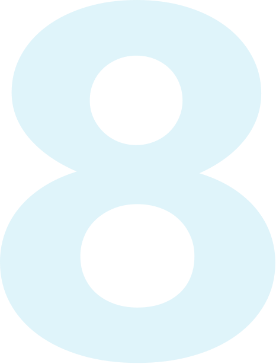

Thanks for checking out this Internet Explorer 9 Platform Preview demo. This demo uses common HTML5 animation techniques, Canvas, and touch to provide an interactive Fish experience.

Beta FishIE
CSS3 Animation & Touch